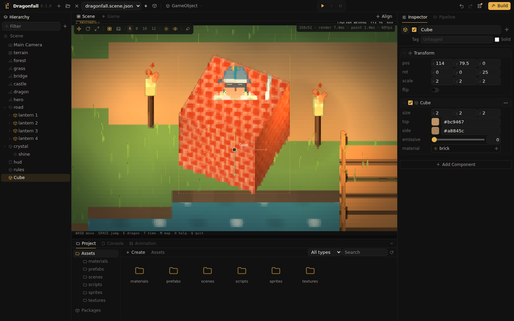
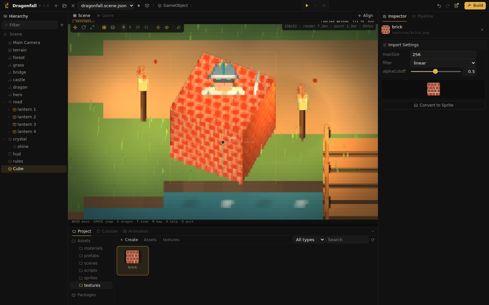

Textures, materials and sprites
Textures are pictures that materials map onto surfaces; the engine samples them for every Braille dot and lights, shades and fogs the result. Sprites are glyph art drawn as whole terminal cells.

Applying a texture
- Drag a
.png,.jpgor.gifinto the Project window. It is imported into the open folder. - Choose Create Material in its context menu. The new material uses the texture and opens in the Inspector.
- Drag the material tile onto an object in the Scene view or in the Hierarchy, or onto a material slot in the Inspector.
Import settings

Selecting a texture shows its import settings in the Inspector. Changes are stored in the texture's .meta file and take effect immediately.
| Setting | Meaning |
|---|---|
maxSize | The longest side kept after import, 256 by default. At Braille resolution, smaller textures look the same and load faster. |
filter | linear blends neighboring texels, for photos and painted textures; nearest keeps them sharp, for pixel art. |
alphaCutoff | Texels more transparent than this value are left out, so a quad with a cut out picture shows only the picture. |
Textures are mip mapped: distant surfaces sample a smaller, averaged copy, which prevents flickering as the camera moves.
Materials
A material is a .material.json asset, created with Create, Material in the Project window and edited in the Inspector:
| Property | Meaning |
|---|---|
albedo | The base color, multiplied with the texture; white leaves the texture unchanged. |
texture | The texture. |
tilingX, tilingY | Number of repetitions of the texture across a face. |
offsetX, offsetY | Shift of the texture across a face. |
emissive | Light emitted by the surface itself, 0 to 1. |
unlit | Ignores lighting and shows the texture as it is. |
Every 3D component has a material slot: Cube, Sphere, Cylinder, Cone, Plane, Quad, Mesh, Ground and Water. A cube maps the texture once onto each face, a plane and a quad once onto their surface, a cylinder once around its side and across its top, a cone once around from base to tip, and a sphere once around from bottom to top. Ground and water repeat the texture once per world unit, so large areas stay detailed; a tiling below 1 enlarges it. Water keeps its glints and reflections with a material. A model uses the texture coordinates of its file. Editing a material changes every object that uses it.
Sprites
A sprite is glyph art: a grid of terminal cells, each with a character, a foreground and a background color. The Sprite component draws it as whole cells at its object's position, hidden behind nearer geometry, which suits logos, portraits and signs that should stay sharp and are not lit. Sprites are created in three ways:
- Convert to Sprite in a texture's context menu, or the button under its preview, writes a sprite 48 cells wide next to the texture. Each cell shows two pixels of the picture stacked with a half block character, which keeps the picture's proportions.
- REXPaint files (
.xp) are imported as they are. - A
.sprite.jsonfile can be written by hand or by a tool:
{
"name": "sign",
"pivot": [2, 1],
"palette": {
".": { "transparent": true },
"w": { "glyph": "#", "fg": "#c8a060", "bg": "#3a2a18" },
"t": { "glyph": "*", "fg": "#ffd890", "bg": "#3a2a18" }
},
"rows": [
".www.",
"wtwtw",
".www."
]
}Each character of rows is a key of palette; every row has the same length. pivot is the cell, counted from the top left, that lies at the object's position. Palette entries marked transparent show what is behind the sprite.